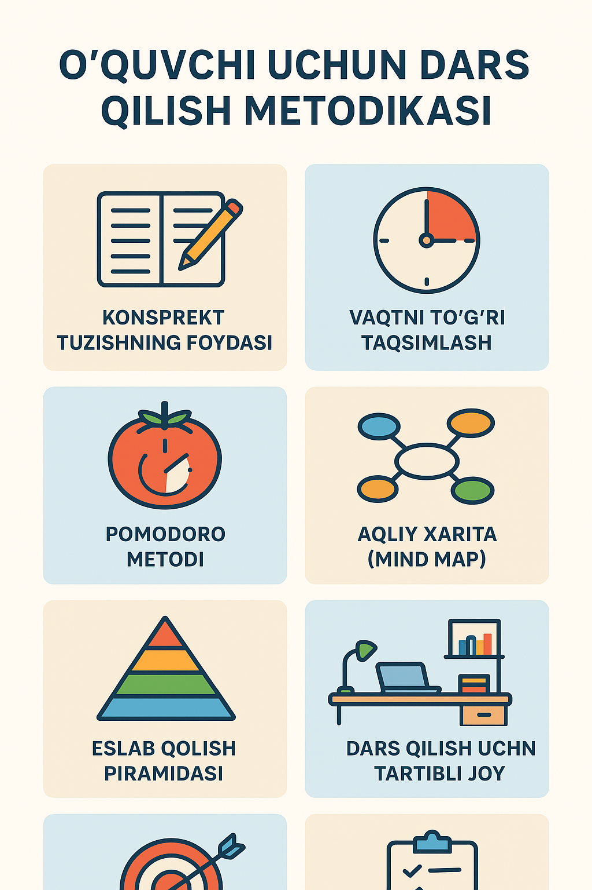

Yorug'lik ta'lim muhitining eng muhim elementlaridan biridir. To‘g‘ri yorug'lik o‘quvchilarni
charchatmasdan va diqqatni jamlashga yordam beradi.
Tabiiy yorug'lik: Agar imkoniyat bo‘lsa, o‘quv xonasiga tabiiy yorug'lik tushishiga
e'tibor bering. Tabii yorug'lik nafaqat estetik jihatdan, balki ruhiyatni ko‘tarishga ham yordam
beradi. Buning uchun o‘quv xonasining derazalari toza va ochiq bo‘lishi kerak.
Sun'iy yorug'lik: Agar tabii yorug'lik yetarli bo‘lmasa, xonaning barcha
burchaklarini yoritish uchun kuchli va bir xil yoritishni ta'minlash kerak. Yorug'lik manbalari
(lampalar)ni o‘quvchilarga bevosita yoritishdan saqlaning. Lampalar xona burchaklarida joylashgan
bo‘lishi kerak.
Maslahat: O‘qituvchi stoliga yoki doskaga bevosita yoritish kerak emas, balki butun
xonani bir tekis yoritish maqsadga muvofiq.
Xona Havo Aylanmasi
Toza va yangilangan havoni ta'minlash o‘quvchilarning diqqatini yaxshilashga yordam beradi. Havo yetarli
darajada toza bo‘lmasa, o‘quvchilar tezda charchab qolishlari mumkin.
Ventilyatsiya: Xonaning o‘z vaqtida ventilyatsiya qilinishi yoki havalandirish tizimining
ishlashi zarur. Bu, ayniqsa, kichik yoki yopiq joylarda juda muhim.
Iqlimni boshqarish: Havo harorati ham muhim. Juda issiq yoki sovuq bo‘lgan xonada dars o‘tish
o‘quvchilarning konsentratsiyasini pasaytiradi. Haroratni 20–22°C atrofida saqlash optimaldir.
Televizor va Proyektor Yordamida Ta'lim
Agar xonada vizual vositalar bo‘lsa (proyektor, ekran, kompyuter), ularni samarali ishlatish muhim.
Ekranlar va ko‘rsatuvlar: Xonaning eng yaxshi ko‘rish nuqtasida proyektor yoki
televizorni o‘rnatish. Ekranda ko‘rsatilayotgan materiallar barcha o‘quvchilar uchun aniq
ko‘rinadigan bo‘lishi kerak.
Texnologik vositalarni to‘g‘ri joylashtirish: Ekranlar yoki videolarni faqat
to‘g‘ri va qulay burchakdan ko‘rish mumkin bo‘lishi kerak. O‘quvchilar ekranga qarab uzoq vaqt
o‘tirishlari kerak bo‘lganda, ekran o‘quvchilardan juda uzoq joyda bo‘lmasligi kerak.
Dars qilish qoidasi videolari
Dars tayyorlash usullari
Har bir o‘quvchi muvaffaqiyatga erishish uchun darsni samarali o‘rganish usullarini bilishi zarur. To‘g‘ri
metodika nafaqat bahoni yaxshilaydi, balki bilimni uzoq vaqt eslab qolishga yordam beradi.
konspekt tuzishning foydasi- o‘rganilgan mavzuni qisqa, aniq va tushunarli shaklda yozib chiqishdir
vaqtni to‘g‘ri taqsimlash- har kuni o‘qishga ajratilgan vaqtni rejalashtirish o‘quvchining intizomini oshiradi.
pomidoro metodi- 25 daqiqa davomida diqqatni faqat bitta darsga jamlash, so‘ng 5 daqiqa tanaffus qilishdan iborat.4 ta “pomodoro”dan so‘ng katta tanaffus (15–30 daqiqa) qilinadi. Bu usul charchamasdan samarali o‘qish imkonini beradi.

Xulosa:
Darsni o‘tkazish uchun qulay muhit yaratish o‘qituvchining muvaffaqiyatli ta'lim berishida juda katta ahamiyatga
ega. Yorug‘lik, havo aylanishi, xona dizayni va shovqin darajasi kabi omillar o‘quvchilarning diqqatini,
konsentratsiyasini va natijada o‘rganish jarayonini to‘g‘ri boshqarishga yordam beradi. O‘qituvchilar uchun bu
qoidalarni inobatga olish, samarali dars o‘tish va o‘quvchilarning muvaffaqiyatini ta'minlashda katta yordam
beradi. Samarali o‘qish — bu faqat dars o‘qish emas, balki to‘g‘ri metodika, reja, va ijobiy kayfiyat bilan ishlashdir. Har bir o‘quvchi o‘ziga mos metodni topib, uni muntazam qo‘llasa, muvaffaqiyat albatta bo‘ladi.